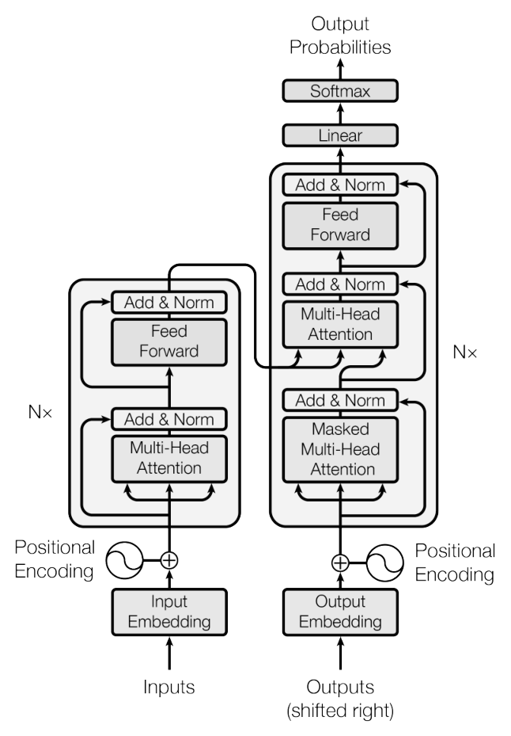

一个架构，撑起了后面所有的模型
004 那篇论文提出的 Transformer，后来成了这个系列里几乎每一篇的模型。这份特辑把散在各篇里的 Transformer 知识串成一张图。一句话说完：Transformer 是只用注意力在词与词之间传信息的网络。一层 = 开会交流（多头自注意力）+ 回工位消化（前馈网络），靠残差和层归一化叠深。004 之后的论文几乎没再改它的骨架，变的是：砍掉哪一半、用什么数据训练、放多大、怎么用。
- 主线：它从哪来 → 一层长什么样 → 三种形态 → 零件怎么变 → 为什么能做大 → 后面的论文怎么用它 → 还剩什么问题。每个零件都对着「删掉 RNN 后出现的一个问题」。
- 每个概念只讲到够用为止。完整推导在 004 Transformer 那一页，这里不重复。
- 括号里的「第 007 篇」等是出处。已上线的篇加了链接，007–018 篇还没上线，暂时只写编号。
- 📎 注解是就地解释的概念，🧭 延伸可以跳过。标「我补充的」是我整理时的归纳或推测，论文里没有这样说。
1从哪来：四篇论文的一条问题链
Transformer 不是凭空出现的。前三篇每一篇都在补上一篇留下的最大缺口，它是第四步。
004 的核心一步，可以这样对照：
| 谁负责 | 003 | 004 |
|---|---|---|
| 读懂源句 | RNN 一步步读 | 编码器自注意力 |
| 翻译时回头看源句 | 注意力 | 编码器-解码器注意力 |
| 读懂已经写出的译文 | RNN 一步步读 | 解码器带掩码的自注意力 |
为什么「删掉 RNN」这么重要？RNN 的第 50 步必须等第 49 步算完，GPU 上几千个核心只能排队。注意力里所有词对的打分是一次矩阵乘法，几千个核心可以同时算。后来谁能被做大，就是这一点决定的（第 5 节）。
2一层 Transformer 在做什么：跟着一个 token 走一遍
2.1总图
今天最常见的是「仅解码器」形态（GPT 一族），图 0 画的就是它。原始的 004 是编码器和解码器两摞，下面是 004 原文的结构图，左边一摞读原文，右边一摞写译文。

2.2输入：词向量 + 位置向量
- 词向量：每个 token 查表得到一个 d_model 维的向量，001 就是这么做的。token 是子词，不是整词：004 用 BPE，第 007 篇改成字节级 BPE，基础词表只要 256 个字节，什么字符都能表示。
- 为什么必须加位置：注意力是对一组向量做加权求和，打乱顺序结果不变。「狗咬人」和「人咬狗」在它眼里一样。RNN 天然按顺序读，删掉 RNN，就得把顺序显式加回去。
- 怎么加：给每个位置一个同样 d_model 维的位置向量，直接加到词向量上。004 用固定的 sin / cos 公式，像一组转速不同的钟表指针，快的区分相邻位置，慢的区分远处位置。第 006、008 篇起改成像词向量一样学出来的位置向量。004 的消融实验里两种做法几乎一样（BLEU 25.7 对 25.8），关键是「有位置信息」，不是用哪种公式。
2.3注意力的核心：查询、键、值
直觉是图书馆检索。每个词同时扮演三个角色：
| 角色 | 比喻 | 含义 |
|---|---|---|
| 查询 q | 你在检索框里输入的需求 | 我想找什么样的信息 |
| 键 k | 每本书的索引卡 | 我能提供什么，用来被匹配 |
| 值 v | 书的内容 | 选中我时，我实际交出的信息 |
三者都由同一个词向量 x 乘三个训练出来的矩阵得到：
为什么要分成三个角色？同一个词「要找什么」和「能提供什么」不一样。「its」要找的是它指代的那个名词，它能提供的是「我是所有格代词」。
拿自己的 q 和每个词的 k 比对打分，分数经 softmax 变成权重，再按权重把每个词的 v 加起来。用 004 页里的小数字走一遍：
四步合起来，004 原文写成一个式子：
| 符号 | 白话 |
|---|---|
Q、K、V | n 个词的查询、键、值各自摞成的矩阵，每行是一个词 |
Q·KT | n × n 的打分表，第 i 行第 j 列 = 词 i 对词 j 的匹配分（图 2 的 ①） |
√dk | 缩放因子，d_k 是每个键的长度（图 2 的 ②）。d_k = 64 时等于 8 |
softmax | 每一行单独做，变成和为 1 的权重（图 2 的 ③） |
· V | 每个词按自己那行的权重，把所有词的 v 加起来（图 2 的 ④） |
两处关键细节：
- 为什么用点积，不用 003 的加性打分：003 每对词都要过一次 tanh 小网络。点积可以直接用高度优化的矩阵乘法，快得多，也省内存。
- 为什么除以 √d_k：q·k 是 d_k 个数相加，d_k 越大，分数波动越大（d_k = 64 时标准差约 8）。分数太大，softmax 会几乎把全部权重给一个词，导数接近 0，打分的参数就学不动了。除以 √d_k 把波动拉回 1 左右。004 原文用的是「We suspect」，这是一个假说。
2.4多头：同样的维度切成几份，各看各的
问题：一次加权平均只能得到一个混合结果。一个词同时需要「语法上的主语」和「代词指谁」两类信息，平均之后两者都模糊。004 原文说这「降低了有效分辨率」。
做法：把 d_model 维切成 h 份，每份各做一次注意力，再拼回来，乘一个矩阵 WO 混合。
证据：004 的消融实验里，单头比最好的设置低 0.9 BLEU；头太多（32 头、每头 16 维）也会变差。
一个跨篇的规律：从 004 到 GPT-3 的大多数尺寸，每个头都是 64 维左右。004、006、008 都是 64；GPT-3 小尺寸 64，大尺寸 128（第 011 篇）。模型变宽时，主要是加头数，不是加宽每个头。
2.5掩码：决定每个词能看见谁
问题：训练时整段文字一次喂进去，所有位置同时算。如果位置 3 能看到位置 4、5，预测下一个词时就等于偷看了答案。
做法：softmax 之前，把「位置 i 看比它靠后的位置 j」的分数设成 −∞，权重就变成 0。位置 1 只看自己，位置 2 看 1、2，以此类推。图 6 最左边那张就是它。
这一招是训练快的另一半原因：有了掩码，整句同时算，每个位置的结果却和「一个词一个词生成」时完全一样。RNN 的解码器训练时也必须串行，Transformer 不用。但生成时仍是逐词的：第 4 个词要等第 3 个词生成出来。
掩码还是第 3 节「三种形态」的分界线。
2.6前馈网络 FFN：每个词单独加工，参数的大头
做法：对每个位置单独、用同一套参数算一次「放大 → 非线性 → 压回」：d_model → 4·d_model → d_model。004 是 512 → 2048 → 512。
为什么需要它：注意力的输出是别人的 v 的加权平均，负责收集信息。加权平均本身是线性的，加工能力有限。FFN 给每个位置一次非线性加工的机会。
一个常被忽略的事实：参数主要在 FFN 里，不在注意力里。
激活函数：004 用 ReLU，负数直接砍成 0。第 006 篇起改成 GELU，一条平滑的曲线，小的负数保留一点点。
2.7残差连接 + 层归一化：让几十层叠得起来
- 残差：输出 = x + 子层(x)。像在原稿上批注，而不是重写全文。加法的导数是 1，梯度可以沿「x」这条直通车道原样流回前面的层。要能相加，每个子层的输出都必须是 d_model 维，所以整个模型的宽度是统一的。
- 层归一化：把一个词的向量减去均值、除以标准差，再乘一个可学的缩放、加一个偏移。上一层输出不管多大，进下一层前都被拉回稳定范围。
- 放的位置改过一次（第 007 篇）：
为什么这一节重要：没有这两样，「层数」就不是一个能随便拧的旋钮。004 是 6 层，GPT-3 是 96 层，中间能一路加上去，靠的是它们。
2.8小结：每个零件对着一个问题
| 删掉 RNN 后出现的问题 | 补救的零件 |
|---|---|
| 句子内部只能串行，远处的词要走 O(n) 步 | 自注意力：一次矩阵乘法，任意两词一步直连 |
| 丢失词序 | 位置编码 / 位置向量（2.2） |
| 一次加权平均把信息抹平 | 多头注意力（2.4） |
| 训练时并行，会偷看后文 | 掩码（2.5） |
| 只有加权平均，缺少非线性加工 | 前馈网络 FFN（2.6） |
| 叠深了难训练 | 残差 + 层归一化，后来改成 Pre-LN（2.7） |
3三种形态：区别只在掩码
3.1一张图、一张表看全
| 形态 | 结构 | 训练目标 | 本系列里的代表 |
|---|---|---|---|
| 编码器-解码器 | 编码器（自注意力不加掩码）+ 解码器（带掩码的自注意力 + 回头看编码器） | 给定输入序列，逐词生成输出序列 | 004 翻译模型；第 013 篇的生成器 BART |
| 仅解码器 | 只留解码器，去掉「回头看编码器」那一块 | 预测下一个词 | 第 006、007、011、012 篇，第 017 篇的模型族，第 018 篇 InstructGPT |
| 仅编码器 | 只留编码器 | 完形填空：预测被盖住的词 | 第 008 篇 BERT；第 013 篇的检索器 DPR（两个 BERT） |
3.2仅解码器：为什么只要一半就够
去掉编码器后，解码器每层剩下的就是「带掩码的自注意力 + FFN」，和 004 的编码器层只差一个掩码。训练信号从「成对的翻译数据」换成「文本本身」：下一个词就是现成的答案，不需要人标注，所以能用海量文本预训练（第 006 篇）。
一个后果：因为有掩码，最后一个位置是唯一看过整段输入的位置。所以第 006 篇微调做分类时，从最后一个位置取表示；第 017、018 篇的奖励模型，也在最后一个 token 上打分（6.4）。
3.3仅编码器：为什么双向需要完形填空
想让每个词同时看左右，又用「预测下一个词」来训练，就会泄漏：允许看右边，答案就在输入里。更隐蔽的是，即使只在输入层挡住某个词，它的信息也会被别的位置在第 1 层吸收，第 2 层再传回来，层数越多越容易绕回去（第 008 篇）。
BERT 的解法：把要预测的词从输入里拿掉，换成 [MASK]。被预测的词根本不在输入里，就可以放心用全双向注意力。代价是每条样本只能在约 15% 的位置上学习。
第 008 篇特意把 BERT-BASE 定成和 GPT-1 一样大（12 层、768 维），关键区别只有注意力的方向。这是本系列里最干净的一组「掩码决定一切」的对照。
3.4后来为什么是仅解码器赢了
第 008 篇发表时，双向在理解类任务上全面领先。但本系列之后的主线（第 011、012、017、018 篇）全是仅解码器。
我补充的从这些解读里能找到三条理由。一，一个目标兼顾理解和生成：预测下一个词既能续写，也能把任务写成文字让它续写来做理解题（第 007、011 篇），BERT 要生成就得另接解码器。二，每个位置都在学：仅解码器每个位置都预测下一个词，BERT 只在约 15% 的位置上算损失。三，规模化路线被它走通了：第 009 篇的缩放定律、第 011 篇的上下文学习都在仅解码器上做出来，后面的人沿着这条已被验证的路继续走。这是我的归纳，哪条起决定作用，本系列的论文没有回答。第 013 篇的 BART 也说明，编码器-解码器在「输入一段、输出一段」的任务上仍然好用。
4零件怎么演化：从 004 到 GPT-3
骨架一直没变。下面是被换掉或被放大的部分。
| 004 base | 006 GPT-1 | 007 GPT-2 最大 | 008 BERT-BASE | 011 GPT-3 | |
|---|---|---|---|---|---|
| 形态 | 编码器-解码器 | 仅解码器 | 仅解码器 | 仅编码器 | 仅解码器 |
| 层数 | 6 + 6 | 12 | 48 | 12 | 96 |
| d_model | 512 | 768 | 1600 | 768 | 12288 |
| 头数 × 每头维度 | 8 × 64 | 12 × 64 | 未列出 | 12 × 64 | 96 × 128 |
| FFN 宽度 | 2048（4×） | 3072（4×） | 4× | 3072（4×） | 4× |
| 激活 | ReLU | GELU | GELU | GELU | 沿用 |
| 位置编码 | 固定 sin/cos | 学出来的 | 沿用 GPT-1（待核实） | 学出来的 | 学出来的 |
| 层归一化 | Post-LN | Post-LN | Pre-LN + 末层 LN | Post-LN | Pre-LN |
| 注意力 | 全连接 | 全连接 | 全连接 | 全连接 | 全连接与局部交替 |
| 上下文 | 按句子 | 512 | 1024 | 512 | 2048 |
| 参数量 | 6500 万 | 约 1.17 亿 | 15 亿 | 1.1 亿 | 1750 亿 |
怎么读这张表：
- 真正改了机制的只有三处：位置编码从公式换成学出来的，效果相当；层归一化从 Post 挪到 Pre，为了叠深（第 007 篇）；GPT-3 一半的层改用局部注意力，为了省算力（第 011 篇，原文没有消融，影响多大不清楚）。
- 其余全是放大：层数 6 → 96，宽度 512 → 12288，上下文从「按句子」到 2048。FFN 宽度 = 4 × d_model、每头 64–128 维这两个比例，从 004 一直沿用到 GPT-3。
- 后来的模型干脆把形状比例也固定了：第 017 篇的模型族规定 d_model = 128 × 层数、FFN 宽度 = 4 × d_model，依据就是第 009 篇的「形状几乎无关」（5.2）。第 010 篇的 Chinchilla 和 Gopher 用同一套架构，只改参数量和数据量。
5为什么它能被放大
「模型越大越好」在 004 里只是消融实验里的一句观察。要把它变成 1750 亿参数的现实，需要三件事同时成立：算得快、训得稳、放大有回报。
5.1算得快、训得稳
- 并行（004）：每层的串行步数是 O(1)，RNN 是 O(n)。004 base 在 8 块 P100 上训 12 小时，就超过了此前所有模型，训练成本是对手的几分之一到几十分之一。这和 GPU「擅长同时做很多一样的矩阵运算」高度契合。
- 优化器（第 005 篇 Adam）：给每个参数一个自适应的步长。004 用的 β₂ = 0.98、ε = 10⁻⁹ 比默认值更保守，第 005 篇解释了这几个数的含义。
- 学习率预热（004）：开头参数是随机的，梯度方向不可靠。先用小学习率走几千步，再升到峰值，然后慢慢降。这套「预热 + 衰减」一直沿用到 GPT-3（第 011 篇：预热 3.75 亿 token 后余弦衰减）。
- Pre-LN 与残差缩放（第 007 篇）：让 48 层、96 层也能稳定训练（2.7）。
5.2放大有回报，而且可预测：第 009 篇
第 009 篇不是新架构，而是对 Transformer 做系统测量。和架构直接相关的结论有三条。
一，形状几乎无关。参数量相近时，6 层 × 4288 维和 48 层 × 1600 维的损失相差在 3% 以内。宽高比变化 40 倍，损失只变几个百分点。
二，Transformer 比 LSTM 更会用长上下文。LSTM 在约 100 个 token 之后基本不再改善，Transformer 一直到上下文末尾都在改善；同参数量下，Transformer 渐近胜出。这是第 1 节「一步直连 vs 一步步传」在数量上的证据。第 006 篇也有一个较粗的对照：同样的框架换成单层 LSTM，平均分掉 5.6。
三，损失随参数、数据、算力按幂律下降，可以先用小模型预测大模型。第 010 篇在此基础上修正了「参数和数据该怎么配」。
5.3参数都在哪：一个公式贯穿全系列
第 2.6 节的结论是每层约 12d²。所以仅解码器 Transformer 的参数量近似为：
| 符号 | 白话 |
|---|---|
N | 模型的参数量 |
12 | 每层 12 个 d × d 矩阵的量：注意力 4 个，FFN 相当于 8 个（图 4） |
L | 层数 |
dmodel | 每个词向量的维度，也是整个模型的宽度 |
拿它验算本系列出现过的模型（数字来自各篇解读的验算）：
| 模型 | 层数 | d_model | 12·L·d² | 加嵌入后 | 原文标称 |
|---|---|---|---|---|---|
| GPT-1 | 12 | 768 | 8490 万 | 约 1.16 亿 | 约 1.17 亿 |
| BERT-BASE | 12 | 768 | 8500 万 | 约 1.09 亿 | 1.1 亿 |
| GPT-3 Small | 12 | 768 | 8490 万 | 约 1.25 亿 | 1.25 亿 |
| GPT-2 最大 | 48 | 1600 | 14.7 亿 | 约 15.6 亿 | 15.4 亿 |
| GPT-3 | 96 | 12288 | 1739 亿 | 约 1745 亿 | 1750 亿 |
怎么读：模型越大，嵌入层占比越小。GPT-3 里词表嵌入约 6 亿，不到总数的 0.4%。参数几乎全在每层那几个 d × d 的大矩阵里。这就是第 014 篇 LoRA 只盯着这些矩阵下手的原因（6.3）。
6后面的篇怎么用它：架构不动，动别的
从第 006 篇开始，几乎每篇都刻意不改架构。第 012 篇说「Codex 的架构就是 GPT-3 的架构」，第 018 篇说「所有模型都用 GPT-3 架构」。创新发生在架构外面。
6.1改输入：把任务写进序列里
Transformer 只认「一串 token」。任何任务只要能拼成一串，就能用同一个模型。
| 篇 | 怎么拼 |
|---|---|
| 006 GPT-1 | 句对、多选题用分隔符拼成一条序列，从最后一个位置取表示做分类 |
| 008 BERT | [CLS] 句子A [SEP] 句子B [SEP]，加段嵌入标明属于哪一句。两句拼在一起，自注意力从第 1 层起就在两句之间交叉看 |
| 007 / 011 | 把任务说明和几个示范直接写进上下文，让模型续写。不改任何参数，一次前向完成，这叫上下文学习 |
| 013 RAG | 把检索到的文档和问题直接拼起来送进 BART，「没有任何新结构」 |
所以上下文窗口的长度（512 → 1024 → 2048 → 第 017 篇的 8192）直接决定了一次能塞多少示范、多少文档。
6.2改分词器：第 012 篇 Codex
架构不动，给代码里的连续空格（Python 的缩进）加专门的 token，平均少用约 30% 的 token，同样的上下文窗口能装下更多代码。输入层面的小改动，也会通过「上下文窗口有限」影响模型能力。
6.3只训一小部分矩阵：第 014 篇 LoRA
前提来自 5.3：参数几乎全在注意力和 FFN 的大矩阵里。LoRA 冻结这些矩阵，给其中几个并上一条低秩旁路，只训旁路。它选的是注意力的 WQ 和 WV。GPT-3 上秩 r = 4 时只训约 1890 万参数，检查点从 350GB 变成约 35MB。
一个和结构有关的发现：同样的预算下，只调 WQ 或 WK 明显偏低，调 WV、WO 较好。
我补充的我的猜想：WQ、WK 只决定「注意力权重怎么分配」，也就是 Q·Kᵀ 那一步；WV、WO 决定「取回什么内容」，后者对改变输出更关键。原文没有解释，这个猜想也没有验证。
6.4换输出头：第 017、018 篇的奖励模型
语言模型的最后一层，把隐藏向量映射成词表大小的一串分数。奖励模型只是把这一层换成输出一个数的线性层，接在最后一个 token 上。第 017 篇叫它「值头」，第 018 篇的说法是「SFT 模型去掉最后的反嵌入层」。
第 018 篇的 PPO 里还有一个价值函数，也是同一架构，从 6B 的奖励模型初始化。所以 RLHF 流水线里的四个模型（策略、参考策略、奖励模型、价值函数）全是 GPT-3 架构的 Transformer，区别只在输出头和训练目标。
6.5小结
| 动了哪里 | 篇 | 架构改了吗 |
|---|---|---|
| 砍掉一半 + 换训练目标 | 006、008 | 只改掩码 |
| 稳定性细节 + 放大 | 007、011 | Pre-LN、局部注意力 |
| 测量规模规律 | 009、010 | 不改 |
| 换数据 / 分词器 | 012 | 不改 |
| 外挂检索、拼接输入 | 013 | 不改 |
| 冻结大矩阵、加低秩旁路 | 014 | 不改主体 |
| 换输出头 + 新训练流程 | 017、018 | 只换最后一层 |
我补充的一句话：004 之后，Transformer 成了一个通用的计算底座。后面的论文争的是喂什么数据、用什么目标、放多大、怎么用，而不是网络长什么样。
7它留下的问题
| 问题 | 来源 | 本系列里的处理 |
|---|---|---|
| 注意力的代价随长度平方增长 | 004 的复杂度对比 | 004 提出「只看附近 r 个位置」但没做实验；GPT-3 交替用全连接和局部注意力，没有消融（第 011 篇） |
| 生成时仍逐词串行 | 004 的掩码一节 | 本系列没有处理。第 011 篇的「一次前向」指读完输入只要一次，生成每个新 token 仍要再算一次 |
| 位置编码外推到更长序列 | 004 只是期望，没验证 | 学出来的位置向量有硬上限（2.2）；新位置编码不在本系列范围内 |
| 点积打分可能不够强 | 004 的消融实验 | 没有处理；第 009 篇的结论暗示，这类细节在规模面前影响较小 |
🧭 延伸 · 后世的进展（不在本系列论文里，细节待核实）
- Pre-LN 成为主流。
- 位置编码换成 RoPE、ALiBi 等。RoPE 的「旋转」思想，和 004「挪动 k 个位置等于转一个固定角度」一脉相承。
- FlashAttention 不改数学定义，只优化显存读写，让长序列的精确注意力算得动。
- FFN 的激活换成 SwiGLU 等，或者在 FFN 的位置放混合专家（MoE）。第 010 篇提到过 Switch Transformer、GLaM。
读完之后：自检和衔接
读完应该能回答
- 003 已经有注意力了，004 多做了什么？为什么删掉 RNN 让训练快了一个量级？（第 1 节）
- 删掉 RNN 后出现了哪几个问题，分别由哪个零件补上？（2.8 的表）
- 为什么要除以 √d_k？为什么多头不会多花 8 倍算力？（2.3、2.4）
- 三种形态的本质区别是什么？BERT 为什么不能直接用「预测下一个词」做双向？（第 3 节）
- 一层的参数主要在哪？GPT-3 的 1750 亿是怎么算出来的？（2.6、5.3）
- 从 004 到 GPT-3，架构真正改了哪几处？其余靠什么变强？（第 4 节）
- 第 006 篇之后的论文大多不改架构，它们的创新分别在哪？（6.5 的表）
- 奖励模型为什么在最后一个 token 上打分？（3.2、6.4）
和各篇的关系
它的来路：001 NPLM（词向量、softmax 输出层）→ 002 Seq2Seq（编码器-解码器、逐词生成）→ 003 Bahdanau 注意力（打分、softmax、加权求和）→ 004 Transformer（只用注意力）。
它的去向：第 005 篇 Adam 讲清优化器；第 006、007、011 篇沿仅解码器一路放大；第 008 篇走仅编码器；第 009、010 篇测量放大的规律；第 012–014、017、018 篇在架构外面做文章。这些篇上线后，会从这里链过去。